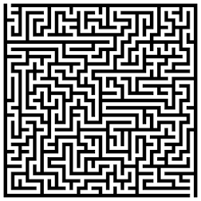

# Week 3: Recursion ### Objectives 1. What is Recursion, and how does it differ from iterative solutions? 2. How can Recursion be used to solve problems, and what are some classic examples? 3. What are the benefits and challenges of using Recursion in programming? --- ### What is Recursion? Recursion is a programming technique where a method calls itself directly or indirectly to solve a <u>smaller instance of the same problem</u>. <div> <section> <div style="padding: 20px;">  <p>Imagine you're trying to find your way out of a maze. Every time you reach a dead end, you go back to the last decision point (recursive call) and try a different path.</p> </div> <div style="padding: 20px;"> <p>Imagine a mirror reflecting another mirror. The first mirror reflects the second, and the second mirror reflects the first.</p> </div> </section> </div> --- ### Key Concepts: Base Case and Recursive Case Base Case: The condition under which the recursion stops. Recursive Case: The part where the function calls itself with a smaller problem. Example: Factorial Calculation: n! = n * (n-1) * (n-2) * ... * 1 ```java int factorial(int n) { if (n == 1) { // Base case return 1; } else { return n * factorial(n - 1); // Recursive case } } ``` --- ### Advantages and Disadvantages of Recursion | Advantage | Disadvantage | |---|---| |Elegant and Concise Code: Recursive solutions can be more elegant and easier to understand than iterative solutions.|Recursion uses the call stack, so it's important to consider the depth of recursion to avoid stack overflow.| | Simplifies code for problems that can be broken down into similar sub-problems. | Can lead to high memory usage due to function call stack. | |Natural for Certain Problems: Useful for tasks like tree traversal, divide-and-conquer algorithms, and mathematical sequences are naturally recursive. | May be less efficient than iterative solutions in some cases. | --- ### Other Recursion Examples - Fibonacci Sequence: F(n) = F(n-1) + F(n-2), F(0) = 0, F(1) = 1 ```java int fibonacci(int n) { if (n <= 1) return n; // Base case return fibonacci(n - 1) + fibonacci(n - 2); // Recursive case } ``` - Binary Search: ```java int binarySearch(int[] arr, int low, int high, int key) { if (low > high) return -1; int mid = (low + high) / 2; if (arr[mid] == key) return mid; else if (arr[mid] > key) return binarySearch(arr, low, mid - 1, key); else return binarySearch(arr, mid + 1, high, key); } ``` - Tower of Hanoi: <iframe width="560" height="315" src="https://www.youtube.com/embed/rf6uf3jNjbo?si=Yo9R_Wthz-LKG1n9&start=95&end=444" referrerpolicy="strict-origin-when-cross-origin" allowfullscreen></iframe> --- ### Recursion vs. Iteration | When to use recursion | When to use iteration | |---|---| | Problems that can be naturally divided into smaller subproblems. | Problems that can be solved more efficiently with loops. | | Problems with a clear base case and recursive case. | Problems where recursion might lead to stack overflow errors. | --- Using Recursion: ```java int binarySearch(int[] arr, int low, int high, int key) { if (low > high) return -1; int mid = (low + high) / 2; if (arr[mid] == key) return mid; else if (arr[mid] > key) return binarySearch(arr, low, mid - 1, key); else return binarySearch(arr, mid + 1, high, key); } ``` Using Iteration: ```java int binarySearch(int[] arr, int key) { int left = 0, right = arr.length - 1; while (left <= right) { int mid = left + (right - left) / 2; if (arr[mid] == key) return mid; if (arr[mid] < key) left = mid + 1; else right = mid - 1; } return -1; // Key not found } ``` --- ### Knowledge Check 1. True or False: A recursive function must have a base case to avoid an infinite loop. <span class="fragment"> True </span> 2. True or False: Recursion is always more efficient than iteration. <span class="fragment"> False </span> 3. True or False: A recursive function can call itself directly or indirectly. <span class="fragment"> True </span> 4. True or False: Recursion is often used to solve problems that can be broken down into smaller, similar subproblems. <span class="fragment"> True </span> --- 5. Which of the following is the common use case for recursion? - a) Implementing iterative algorithms - b) Solving tree-based problems - c) Calculating factorial - d) All of the above <span class="fragment"> b) Solving tree-based problems </span> --- 6. What is the base case in the recursive factorial function? - a) factorial(0) = 0 - b) factorial(1) = 1 - c) factorial(n) = n! - d) factorial(n) = n * factorial(n-1) <span class="fragment"> b) factorial(1) = 1 </span> --- 7. Which of the following statements about recursion is correct? - a) Recursion is always more efficient than iteration. - b) Recursion can be used to solve any problem that can be solved iteratively. - c) Recursion can be used to solve problems that can be broken down into smaller, similar subproblems. - d) Recursion is only useful for solving mathematical problems. <span class="fragment"> c) Recursion can be used to solve problems that can be broken down into smaller, similar subproblems. </span> --- 8. Consider the following recursive function: ```java public static void printNumbers(int n) { if (n > 0) { printNumbers(n-1); System.out.print(n + " "); } } ``` What is the output of `printNumbers(5)`? - a) 1 2 3 4 5 - b) 5 4 3 2 1 - c) 1 2 3 4 5 4 3 2 1 - d) 5 4 3 2 1 2 3 4 5 <span class="fragment"> a) 1 2 3 4 5 </span> --- ### LABS -----